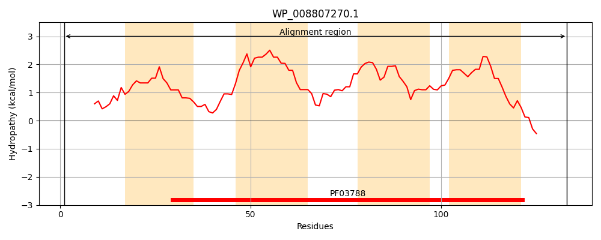
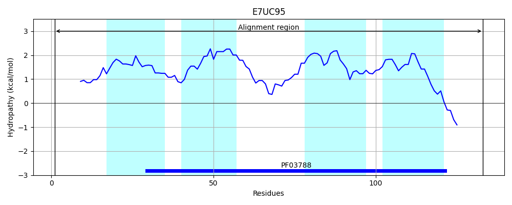
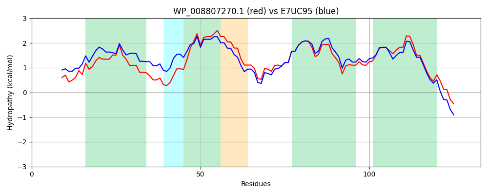

Hit Accession: E7UC95
Hit TCID: 1.E.14.1.9
Hit Description: gnl|BL_ORD_ID|3848 gnl|TC-DB|E7UC95|1.E.14.1.9 Holin-like protein CidA OS=Escherichia coli WV_060327 GN=EcoM_04309 PE=4 SV=1
Mach Len: 133
e:0.000000
Query TMS Count : 4
Hit TMS Count: 4
TMS-Overlap Score: 3.550000
Predicted Substrates:None
BLAST Alignment:
Score: 513 , Bit scores: 202 bits, E-value: 2.2e-68, Alignment length: 133, Percentage identity: 74
Query: 1 MAFAPARVAPAVAQRLQIPLQVLLYVGLFIFAQYLVNRWQVPLPANLVGMVMLLLLIVCRVIPLSWVRAGARWLLAEMLLFFVPAVVAVVNYTQLLMVDGWRIFLVIALSTLMVLGATAWVVDRVYRYEVSRL 133
M A R+ PAV Q +Q+ QV+LY GLFIFAQYLV+ +PLPANLVGM+++L LIVCR++PL WVRAGARWLLAEMLLFFVPAVVAVVNY QLL+VDGWRIF VIALST+MVLG TAWVV++VYRYE+ RL
Sbjct: 1 MPVALRRITPAVVQSIQVFFQVVLYAGLFIFAQYLVSWLHLPLPANLVGMILMLALIVCRILPLQWVRAGARWLLAEMLLFFVPAVVAVVNYAQLLLVDGWRIFAVIALSTVMVLGTTAWVVEKVYRYEMRRL 133 | Protein Hydropathy Plots: |
|---|
|  |  |
Pairwise Alignment-Hydropathy Plot:
|
|---|
|  |